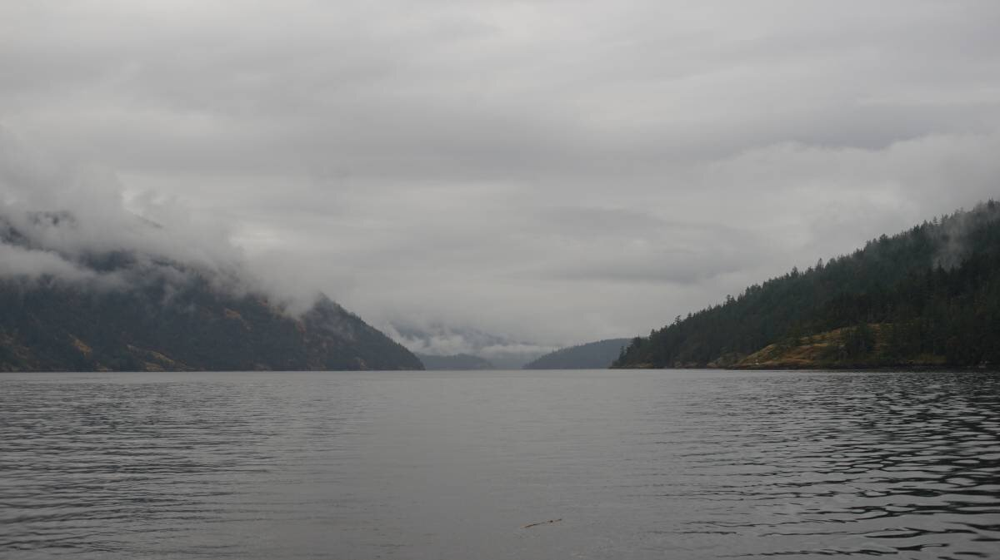

telegraph cove
Note. What we refer to on this page as Telegraph Cove on Thetis Island is the traditional, stolen, unceded, overlapping and/or shared territory land of the Stz'uminus, Semiahmoo, and Quw’utsun First Nation people, Hul’qumi’num speaking peoples and the Cayuse, Umatilla and Walla Walla nations.
We left Maple Bay at noon on June 10th 2023, gliding through very calm waters. The rain had lessened to a fine drizzle, some fog clung to nearby hills, and the water was like a mirror. Stuart Channel is plagued by calms, often, and today was no different.
Sailboats moved past us, with their sail covers on... a sure sign that no wind is coming.
We knew the wind would pick up again from the NW soon, and so we skipped all of the bays lining the west side of Saltspring Island (all are open to the NW), and made our way over to Telegraph Cove, on the south of Thetis Island. We had first aimed to stop at Sibell Bay near Ladysmith, but seeing as there was no wind we decided to stop there instead.
Telegraph Cove used to be an ideal stop for transient boats. The inside bay between Telegraph Harbour and Thetis Island marina is shallow, and protected from all winds, but like all protected coves in this province, all have been overrun by local moorings. Taking a spot at a dock, or anchoring south of Thetis Island marina, are the only options. The south is also suffering from a gradual invasion of moorings, we spotted 6-7 clogging up the area closest to the marina. And so, we had to anchor way south, near Foster Point, hugging the lower east side of Thetis Island (48°58.291'N, 123°39.977'W).
The water here is in the 20-30 ft range, with a mud bottom. The cove is sheltered from NW winds, but is open to the south. We took shelter from big winds (25-35 kts) here, and the holding was more than adequate.
The ferry connecting the mainland to Penelakut Island runs often (last one seems to be around 23h), but if a good wind is blowing its wakes do not reach us. Even so, the ferry does not create as much wake as the constant passing of small motor boats. Some of them brush right by us, as if playing a game of dare. The bay has a float plane service, barring anchoring on the Penelakut side of the anchorage (lest you want your mast clipped by a float plane wing).
The anchorage here is nothing to rave about, but it is a good place to shelter from NW winds, even if the inside bay is not an option.
We saw many bald eagles, oyster catchers and swallows. Devine was talking to their parents on the phone when a swallow came to land on their foot, a real snow white moment. The next day the swallows returned, at about the same time, often stopping to gaze at the end of our boom, as if looking for a place to nest. The end of our boom is not open, and is overall, a very poor place to nest, we think.
We spent a few lazy days here, waiting for good weather, and for a good time to transit the last set of Gulf Island narrows.
We had planned to take Dodd's Narrows at 8am (a 2 hour sail away), but seeing as the wind was blowing at 25-35 from the NW, we thought it a better idea to go through Gabriola Pass. Dodd's opens onto Northumberland Channel which opens right into the strait, right into the NW. Evidently, powering through that gives a better angle to go north after that, but we weren't in the mood for that. There is some SE winds coming, and riding that out of Silva Bay is way fine.